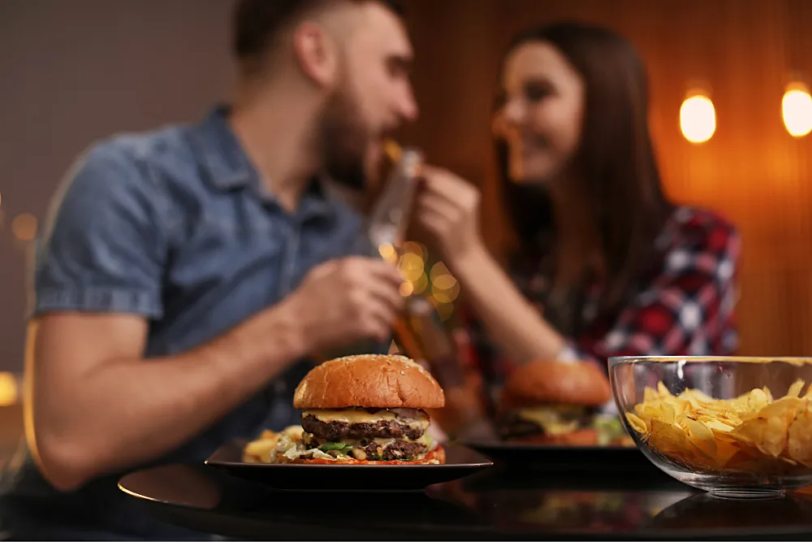
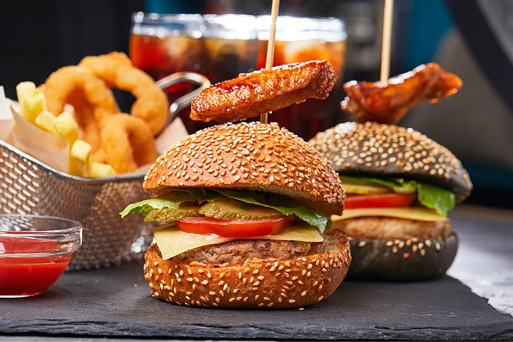
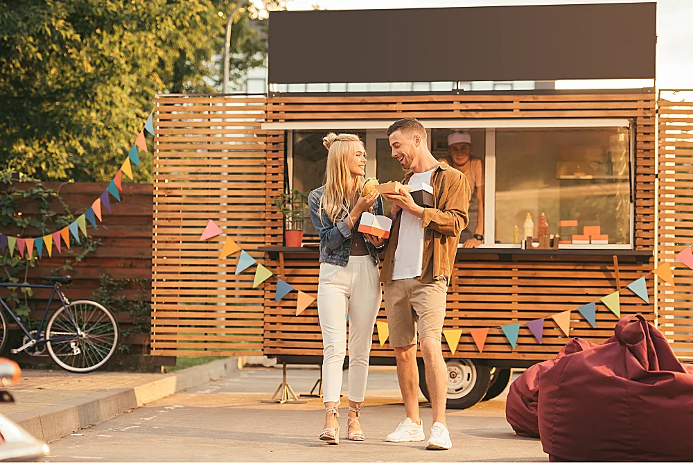

<!-- Anastasiia Kravchenko -->
<link rel="stylesheet" href="css/index.press.css" />
<section class="press-news" id="press-news">
  <div class="press-news__header-container">
    <p class="press-news__blog">Blog</p>
    <h3 class="press-news__header">Press & News</h3>
    <p class="press-news__desc">
      Freddy Burgers is often featured in top media as one of the best burger
      food trucks in the USA.</p>
  </div>
  <div class="press-news__articles">
    <div class="press-news__article-container">
      <figure class="press-news__article-picture">
        
        <figcaption>
          <span class="press-news__article-publisher">FLAUNT MAGAZINE</span>
          <span class="press-news__vertical-divider">|</span>
          <span class="press-news__article-date">JULY 28</span>
        </figcaption>
      </figure>
      <div class="press-news__article-name"><h4>BuzzFeed Loves </h4><h4>Freddy Burgers!</h4></div>
      <p class="press-news__article-text">
        Where have you had the most delicious burgers in Los Angeles? Yesterday,
        walking around the city center, we saw an unusual food truck...
      </p>
      <div class="press-news__read-article-button">
        <a href="#">Read Article</a>
      </div>
    </div>
    <div class="press-news__article-container">
      <figure class="press-news__article-picture">
        
        <figcaption>
          <span class="press-news__article-publisher">CONDE NAST TRAVELER</span>
          <span class="press-news__vertical-divider">|</span>
          <span class="press-news__article-date">JULY 12</span>
        </figcaption>
      </figure>
      <div class="press-news__article-name">
        <h4>Top 50 Food Trucks Worth </h4><h4>Traveling for</h4>
      </div>
      <p class="press-news__article-text">
        If you don't try street food in a new city, you will not understand
        anything about its atmosphere, local tastes, and culture.
      </p>
      <div class="press-news__read-article-button">
        <a href="#">Read Article</a>
      </div>
    </div>
    <div class="press-news__article-container">
      <figure class="press-news__article-picture">
        
        <figcaption>
          <span class="press-news__article-publisher">C MAGAZINE</span>
          <span class="press-news__vertical-divider">|</span>
          <span class="press-news__article-date">JULY 02</span>
        </figcaption>
      </figure>
      <div class="press-news__article-name"><h4>Top 10 NYC Burger </h4><h4>Food Trucks</h4></div>
      <p class="press-news__article-text">
        Tired of pizza for lunch? Why not get out of your stuffy office and
        order a fresh and juicy burger? Here are the best burger food trucks in
        LA.
      </p>
      <div class="press-news__read-article-button">
        <a href="#">Read Article</a>
      </div>
    </div>
  </div>
  <svg xmlns="http://www.w3.org/2000/svg" viewBox="0 0 1000 100" fill="#FBF7ED"><rect fill="#282623" width="100%" height="100%"/><path d="M0 0v47.6l5-2c1 0 11 3 12 0 2 3 6-3 6 0 0-4 12 3 12 0 0 3 15-1 17 0 2-2 5-1 6 0 0-2 6 2 6 0s2 4 4 0c5 2 12-3 16 0 2-2 4-3 4 0 0 2 6-1 6 0 1 4 15-2 17 0h7c0 1 3-3 6 0h17c2 2 3 1 6 0h6c1-2 21-1 24 0 2 1 4 2 6 0 0-1 22 4 24 0 0 0 5-3 5 0 2-2 10 2 12 0 2 2 6 1 6 0 2 3 4-2 6 0 1 0 25-2 25 1l10-1c3 1 6 6 7 0 1 5 4-2 6 0 2-2 4 3 5 0h12c6 1 36 2 36 0 0 2 3 0 6 0h6c5-2 7 4 11 0 2 0 15 2 17 0h13c3-4 5 1 7 0h29c0-3 6 0 6 0h5c0 2 16-1 18 0 1 4 9-1 12 0s6-2 6 0c8-2 3 4 13 0h10c3 4 19 1 19 0 2 0 21 1 23-1 1 4 3-1 6 1 1 2 11-1 12-1 3 3 9 0 12 1 3-4 6 1 6 0h6c0-3 5 1 6-1 0 3 2 1 4 1 3 4 10-1 13 0 3-2 6-1 6 0 2 2 2 0 6 0 1-2 6 2 6 0 2 0 4 5 6 0h18c2 3 4 1 6 0l6-1c3 2 12 3 17 1 14 3 18 1 24 0 2-1 3 3 5 0 6 2 10-1 16 0 1 3 6 0 9 0 0-2 3 2 5 0 6-6 8 7 13 0 0-2 5 2 5 0 3 3 10 0 10 0 1 2 5-2 8 0 3-1 8 3 12 0h6c2 1 10 4 12 0h6c1-1 5 2 6 0 1 2 4-1 6 0 0-2 5 3 6-1 2 1 6 5 5 1 1 1 3-2 6 0 2-1 5 3 6 0 0 1 6 2 6 0 2 3 4-4 6 0 0-2 3 2 6 0 3 0 6 3 6 0 5 3 8-1 13 0 3-4 6 1 6 0h5c0-1 9 2 12 0 1-1 9 3 11 0h6c2 2 4 4 7 0 3 2 5-4 5-1 10 4 15-2 18 2 0-1 6 2 6-2 0 0 6-2 6 1 1 6 12 2 12 0 1 3 4-3 7 2 2-2 5 2 5 0 1 5 4-5 6 0 2-1 4 2 6 0 1 3 1 0 5 0V0H0Z"></path></svg>
</section>
